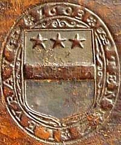
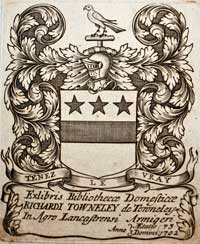
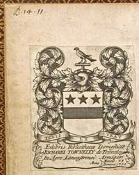

Towneley Family Books

The books and manuscripts from the Towneley family library were sold at Sotheby's on 18-28 June 1883. There had been earlier sales in 1814, 1815 and 1817 but the for the most part the contents of those sales were from the book collection of John Towneley (1731-1813) in London, which was kept separate from the family library held at Towneley. [More on the Towneley book sales.]
The library's origins can be traced back to well before 1603, in which year Richard Towneley (1566-1628) had his book bindings impressed with his coat of arms and the motto Tenez Le Vray. The library collection was greatly extended by his grandson, Richard Towneley (1629-1707), who in 1702 added his own book-plate to all the books in the library. It is likely that this Richard wanted to make a permanent record of his book collection in order to facilitate a particular requirement in his will :
"I doe hereby leave and devise to my son Charles and the heires of my Family all my bookes and Mathematical Instruments and doe will and devise that the same shall be preserved
and kept continually at the Hall of Towneley in nature of Heirloomes for the good and service of my Family and posterity (many of them being valuable and hard to be gott) and the same to be kept together in the Library where they are or some other convenient roome."
The earliest catalogue of the original library is now in Chetham's Library in Manchester. It contains a shelf list locating 1378 books, the latest book being published in 1686, together with a draft subject catalogue of those books together with another 600 titles with no identifying shelf mark. This draft catalogue dates from around 1702 and was superseded by a later subject catalogue now in John Rylands University Library, Manchester. That catalogue dates from around the time of Richard's death in 1707 and includes over 100 additional titles and, with a number of losses from the earlier catalogue, records 1979 books. In the later catalogue, the locations of the books are not given by the old shelf mark but instead each title has an identifier based upon the book's height together with a serial number.
There is yet another catalogue [in private ownership] which is a clean copy of the John Rylands version. It is the only one of the three manuscripts with Richard's book-plate and is dated 1711. The entries were copied from the earlier working version in a large, clear hand. Further books were added in a number of different hands with the last addition being dated 1748. The additions arrived at a much slower rate after 1707 and most of the new books were for entertainment.
Indices for the 1707 library and searchable transcripts of the 1686 shelf list and 1707 catalogue can now be downloaded as PDF files.
The shelf mark and catalogue identifier of books from this library can normally be found on the leaf carrying the bookplate, as seen on the right, or on the book's title page as can be seen above for one now in Chetham's Library, Manchester - "The Booke of Honor and Armes" E.1.18 / R106 .

Towneley armorial binding 1603
Richard Towneley's bookplate dated 1702
Towneley shelfmark B.14.11
top left corner[now in Bancroft Library, University of California, Berkeley]